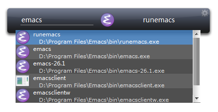

Basic Usage¶
Activate Launchy¶
After LaunchyQt is started, you could Press Alt + space (default hotkey) to activate Launchy, this may bring about the main widget of Launchy.
Tips: Hotkey is customizable in option dialog.
Find and Run Program¶
You can search for a program and execute it.
Let’s take “emacs” as an example, type “emacs” in search box, and there will be a drop list, you can choose a match item with “up arrow” and “down arrow” in the keyboard. Once you have focused the target item, press “Enter”, and the program would be excuted.
Launchy would record you search history, and next time when you type in a same program name, Launchy will provide a default match from history. This is very useful when you are searching a frequent item.